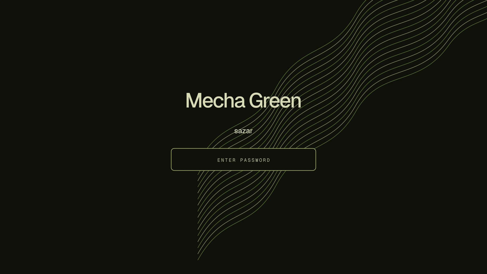
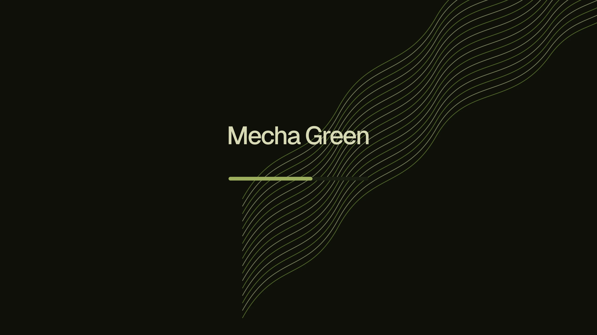
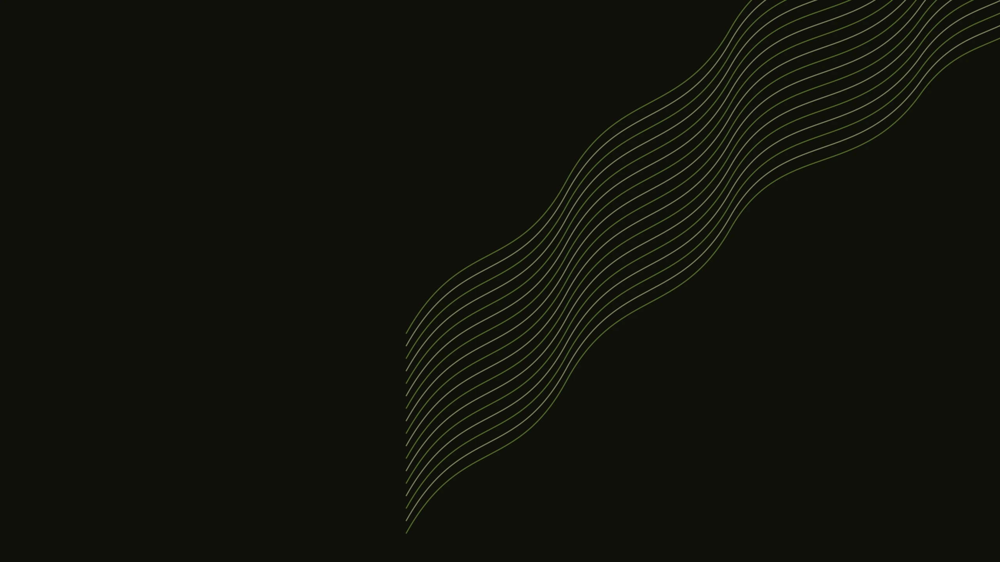

Mecha Green / propuesta de marca de sistema
Flat system
identity.
Reemplazo del logo pixelado neón por un wordmark Geist plano, con la misma topografía del escritorio y una paleta olive/sand. Sin glow, sombras ni texto duplicado.


